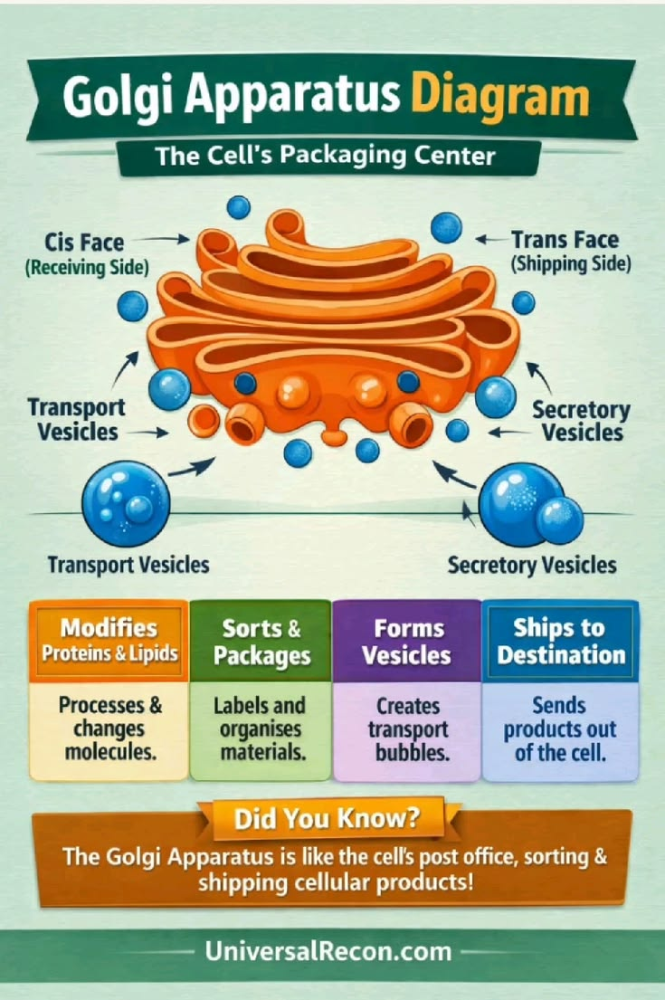

📦 Golgi Apparatus
The packaging, modification and distribution centre of the cell.
Introduction
The Golgi Apparatus, also known as the Golgi Body or Golgi Complex, is a membrane-bound cell organelle found in eukaryotic cells. It was discovered by the Italian scientist Camillo Golgi in 1898.
The Golgi Apparatus consists of a stack of flattened membrane-bound sacs called cisternae. It receives proteins and lipids from the Endoplasmic Reticulum, modifies them, packages them into vesicles and transports them to different parts of the cell or outside the cell.
Besides packaging and transport, the Golgi Apparatus also forms lysosomes and helps in the secretion of enzymes, hormones and other useful substances.
Functions of the Golgi Apparatus
- Modifies proteins and lipids received from the Endoplasmic Reticulum.
- Packages materials into vesicles.
- Transports substances within and outside the cell.
- Forms lysosomes.
- Helps in secretion of enzymes, hormones and mucus.
- Assists in the formation of the cell plate during plant cell division.
📌 Key Points
- The Golgi Apparatus is the packaging and distribution centre of the cell.
- It consists of flattened membrane-bound sacs called cisternae.
- It modifies, sorts and packages proteins and lipids.
- It transports substances inside and outside the cell.
- It forms lysosomes and helps in secretion.
📝 Remember
ER Makes → Golgi Modifies → Golgi Packages → Golgi Delivers
🎯 JKBOSE Exam Point
The following questions are commonly asked in JKBOSE examinations:
- Define Golgi Apparatus.
- Who discovered the Golgi Apparatus?
- State any five functions of the Golgi Apparatus.
- What are cisternae?
- How does the Golgi Apparatus help in secretion?
- Explain the role of the Golgi Apparatus in lysosome formation.

Figure 1.9 — Structure of the Golgi Apparatus showing stacked cisternae and transport vesicles.
❓ Practice Questions
- What is the Golgi Apparatus?
- Who discovered the Golgi Apparatus?
- Write any five functions of the Golgi Apparatus.
- What are cisternae?
- Why is the Golgi Apparatus called the packaging centre of the cell?
- How does the Golgi Apparatus help in lysosome formation?